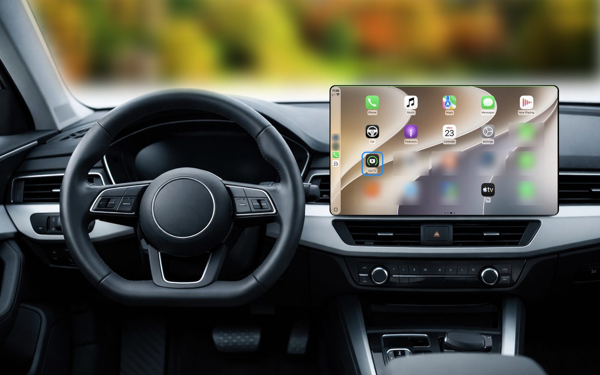
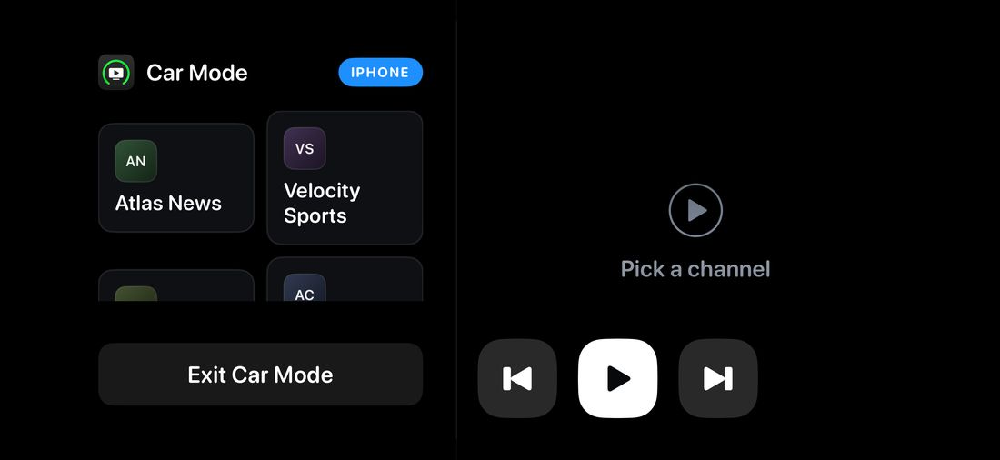

Car.TViPhone · iPad · Apple TV · CarPlay
如何使用 Car.TV
逐步了解每项功能，以及如何在车上使用。
目录
观看导览
连接 CarPlay
- 检查你的汽车只有在支持 CarPlay 视频的汽车上，并且使用 iOS 26.4 或更高版本时，Car.TV 才会在车载屏幕上显示视频。其他汽车只播放声音。在“设置 › 汽车检查”中可以了解你的汽车支持哪些功能。

- 有线或无线连接用线缆将 iPhone 连接到汽车的 CarPlay USB 端口；如果你的汽车支持，也可以使用无线 CarPlay。

- 在 iPhone 上打开 CarPlay设置 › 通用 › CarPlay › 选择你的汽车。打开“锁定时允许 CarPlay”。

- 在车载屏幕上找到 Car.TV在 CarPlay 主屏幕上轻点 Car.TV。找不到？在 iPhone 上前往“设置 › 通用 › CarPlay › 你的汽车 › 自定 › App”。

- 挑选想看的内容电视直播、我的视频、音乐和播放列表都在车载屏幕上，和手机上一样。

- 停车时观看视频汽车行驶时，CarPlay 会停止画面，Car.TV 继续播放声音，手机上会显示“车载屏幕 · 仅声音”。

- 方向盘按键观看电视直播时，下一首和上一首按键会切换频道。可在“设置 › 播放”中关闭。
- 乘客专用：车载模式在手机上，车载模式提供大图块和大按钮。驾驶员请专心看路。

入门
- 欢迎使用 Car.TV你的电视直播、电影、视频和音乐，可在 iPhone 上、电视上，以及停车时在车载屏幕上观看。下面是 1 分钟导览。
- 在这里添加任何内容IPTV 播放列表（M3U）、Xtream 门户、Jellyfin、Emby 或 Plex 服务器、云文件夹，或“文件”和“照片”中的视频。
- 搜索全部内容频道、电影、剧集，以及你自己的视频和歌曲。
- 设置你的来源、Premium、语言、车载模式、家长锁，以及本指南。
- 主页从上次离开的地方继续：继续观看、正在播出和资料库新增内容。
- 电视直播所有频道，可按国家或用筛选条件查看。长按频道可查看其节目指南和收藏。
- 资料库你的内容优先：我的视频、音乐和播放列表可离线播放。电影和剧集来自你的来源。
- 已保存你的收藏和下载，没有信号时也能用。
- 还没有播放列表？试试示例频道并打开电影，看看一切如何运作。
- 播放器以全屏打开。向下轻扫后，会在小播放条中继续播放，你可以同时浏览。
- 导入你的文件通过“Wi-Fi 传输”从电脑发送视频和音乐，或用“浏览器”从网页存储。
- 要在车上使用 Car.TV？逐步了解如何连接 CarPlay。你可以随时在“设置 › 如何使用 Car.TV”中重播此导览。
电视直播

- 查找频道按名称搜索所有频道。
- 两种布局、国家、筛选泳道或行；按国家浏览频道；按语言、类别和画质筛选。
- 长按频道节目指南、收藏，以及节目表缺失时的“修正节目指南”。
电视节目指南
- 滑动浏览时间轻点正在播出的节目即可观看。
- 回看对于有回看存档的频道，已播出的节目提供“从头观看”。
资料库
- 你自己的文件我的视频、音乐和播放列表。可离线播放，路上和车里都能用。
- 来自你的来源来自你的播放列表和服务器的电影和剧集。可按来源或类别筛选，并进行排序。
- 搜索此书架只在你正在查看的书架中查找。
- 资料库会记住会打开你上次使用的书架。
我的视频
- 长按视频接下来播放、添加到播放列表、重新命名、选取图片、移到文件夹、共享或删除。
- 选择多个一次移动、排队或删除多个视频。
- 排序和显示按日期、名称、大小、时长或上次播放排序，以网格或列表显示。储存空间也在这里。
- 添加视频来自“文件”或“照片”，通过“Wi-Fi 传输”从电脑导入，或来自网页。
音乐
- 歌曲、专辑、艺人按你喜欢的方式浏览音乐。
- 轻扫歌曲向右轻扫可添加到播放列表。向左轻扫可编辑详细信息或删除。长按可选择“接下来播放”。
- 睡眠定时器音乐会在你选择的时间后自动停止。
播放列表
- 新建播放列表按你自己的顺序混合视频和歌曲，适合后座乘客或路途中。
- 导入从其他 App 导入 .m3u 播放列表。
- 智能播放列表自动保持更新：最近添加、尚未观看、短视频等。
单个播放列表

- 你的封面从“照片”中选取封面，或选取视频中的一帧：⋯ › 封面。
- 播放或随机播放播放整个播放列表；所有内容都在此设备上时可离线播放。
- 重复、速度、幻灯片每个播放列表都有自己的重复和速度设置。添加照片后，歌曲播放时照片会全屏显示。
- 更多添加视频或歌曲、编辑详细信息、置顶、复制、导出为 M3U。拖动可重新排序；向左轻扫可移除。
播放器

- 轻点画面显示或隐藏控制按钮。
- 跳过 15 秒后退或前进 15 秒；中间的按钮可暂停。
- 画面、声音等适应、填充或缩放；音轨；字幕；速度；音画同步。
- 在电视上播放通过 AirPlay、Google Cast 或同一 Wi-Fi 上支持 DLNA 的智能电视播放。
- 车载模式为乘客准备的大按钮。
- 继续播放关闭或向下轻扫：会在小播放条中继续播放。
车载模式

- 为乘客设计大图块、大按钮。驾驶员请专心看路。
- 退出车载模式返回完整的 App。
已保存
- 收藏和下载长按频道或打开电影，然后轻点添加到“已保存”。下载的内容在没有信号时也能播放。
浏览器
- 搜索或输入网址起始页会保留你的收藏和常去的网站。
- 标签页同时打开多个页面，无痕标签页不会留下历史记录。
- 从此页面存储存储你有权保留的音乐和视频。歌曲会放入“音乐”，视频会放入“我的视频”。
Wi-Fi 传输
- 启动服务器然后在连接同一 Wi-Fi 的电脑上打开显示的网址，拖入你的文件。
- 保持此屏幕打开离开此屏幕后传输会停止。歌曲会放入“音乐”，视频会放入“我的视频”。
设置
- 你的来源添加、编辑、刷新或关闭播放列表和服务器。
- 本指南重播导览、连接 CarPlay，并用你的语言阅读指南。
常见问题
为什么我开车时车载屏幕只播放声音？
出于安全考虑，CarPlay 视频就是这样运作的：只有在汽车停放时才显示画面。汽车行驶时，CarPlay 会停止画面，声音继续播放。任何 App 都无法改变这一点。
我的车载屏幕上没有 Car.TV，为什么？
只有在支持 CarPlay 视频的汽车上，并且使用 iOS 26.4 或更高版本时，Car.TV 才会出现。请检查“设置 › 通用 › CarPlay › 你的汽车 › 自定 › App”，并查看 Car.TV 设置中的“汽车检查”。
Car.TV 自带频道吗？
不。Car.TV 播放你添加的内容：你有权访问的 IPTV 播放列表或门户、你的媒体服务器，或你自己的视频和音乐。试试示例播放列表，看看它如何运作。
没有网络时可以播放什么？
“我的视频”和“音乐”中的所有内容、你的下载，以及由它们组成的播放列表。播放列表会提示哪些项目需要网络。
如何把我的视频和音乐导入 Car.TV？
用 + 按钮从“文件”或“照片”添加，通过“Wi-Fi 传输”从电脑导入，通过隔空投送或“共享”按钮，或用“浏览器”从网页存储。
如何制作带照片幻灯片的播放列表？
前往“资料库 › 播放列表 › 新建”，添加歌曲，然后轻点“添加幻灯片”并选取照片。播放该播放列表时，照片会在歌曲播放期间铺满屏幕。
我的播放列表会显示在其他设备上吗？
会，前提是使用 Premium 并在“设置”中打开“iCloud 同步”。视频和歌曲保留在添加它们的设备上，因此其他设备上的播放列表只会列出该设备上已有的内容。
Car.TV 会收集我的数据吗？
不会。无需账户，没有广告，也没有跟踪。你的来源、播放列表和照片保留在你的设备上；如果你打开同步，则保存在你自己的 iCloud 中。
切勿在驾驶时观看视频。CarPlay 仅在汽车停放时显示视频；行驶中，驾驶员只应收听声音。